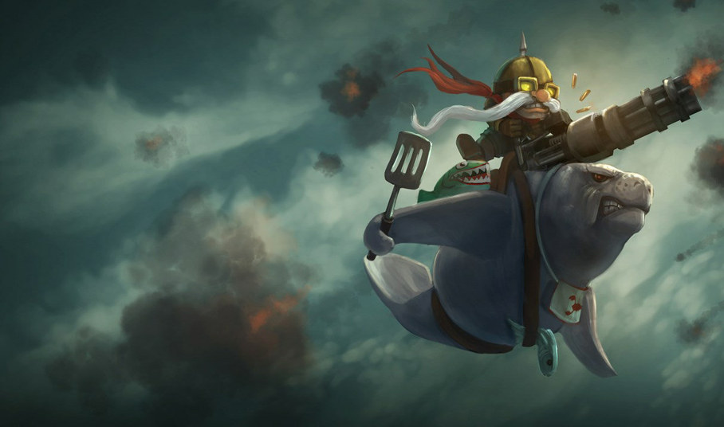
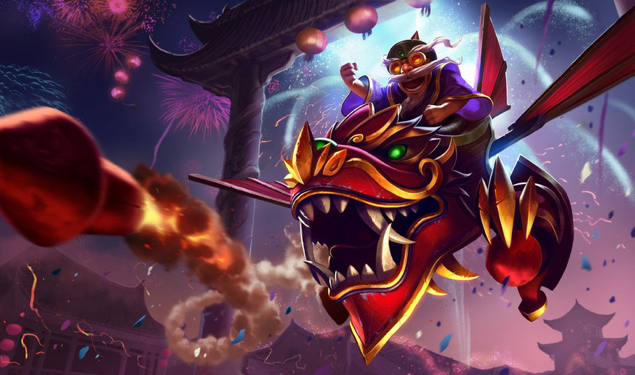
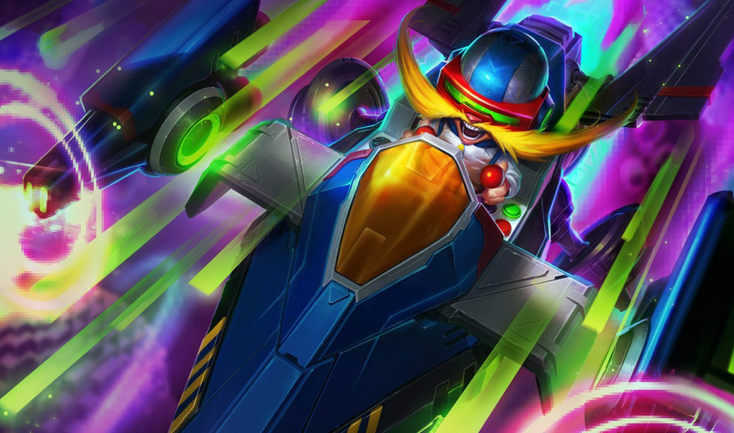
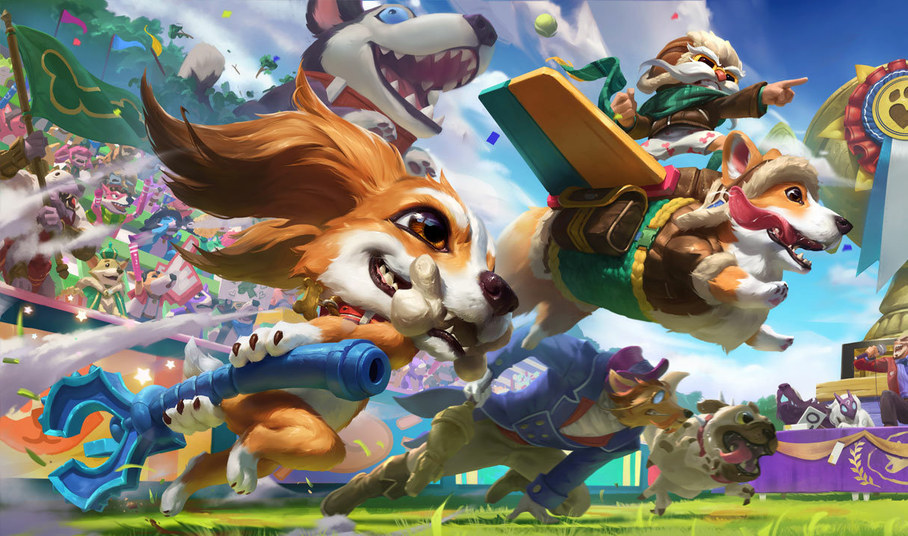
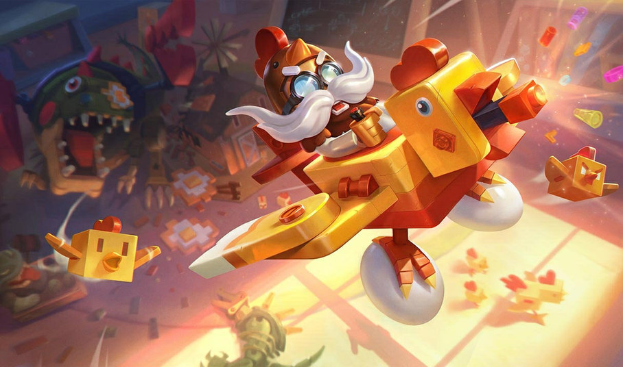
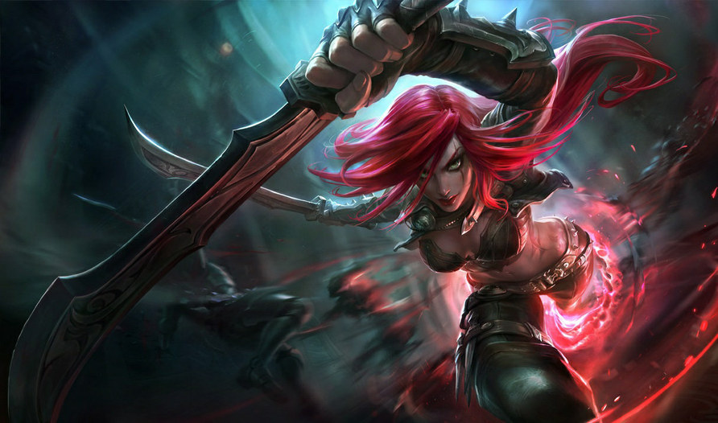

Cumplelolero · ayer, 19 sep de 2009
CORKI17 AÑOS
El Bombardero Osado
Mid · Bandle City · radicado en Piltóver
El dato que nadie sabe
Su helicóptero
tiene nombre oficial
R
ECONNAISSANCE
O
PERATIONS
F
RONT-
L
INE COPTER
ROFL:ROFL:LOL:ROFL:ROFL |
L /---------\
LOL===[ o o ]
L \---------/
| |
---'-----'---
El meme es de 2004. La biografía de Riot lo dice desde 2009 y sigue ahí.
Justo al revés que ayer
El número uno
del mundo es europeo
#1
Europa Oeste
7 273 626
puntos de maestría
OLIVIA COLMAN
sí, la actriz del Óscar
EUW
europa oeste
1,11×
sobre el #2 — lo más apretado de la serie
Y este sí juega
ESMERALDA 4
Diamante 2
su pico histórico
8,0+
de farmeo por minuto
Ayer, el número uno de Katarina
Hierro 1 · doce millones de puntos
Doce skins
Pero solo 6 a la venta

Corki MontaUrfs
975 RP

Ala de Dragón
975 RP

Corki de Arcadia
1350 RP

Corki Corgi
1350 RP
AstroCorki
1350 RP

Pollo Volador
1350 RP
~57 USD
7 350 RP · 3,5 días de salario
las otras seis, fuera de tienda
las otras seis, fuera de tienda
Pero wachen la tragedia
EN BÓVEDA
Trineo de Hielo
1820 RP · 12 feb 2010
EN BÓVEDA
Barón Rojo
1820 RP · 24 mar 2010
0
legendarias que puedas comprar hoy
Mismo día, hace 17 años

Katarina

Corki
12 367 424
7 273 626
puntos del #1 del mundo
20
12
skins totales
11
6
skins comprables
6,3
3,5
días de salario mínimo
1
0
legendarias a la venta
Misma edad, mismo cumpleaños,
y a uno le fue la mitad de bien.
Diecisiete años del Bombardero Osado
Feliz cumpleaños,
Corki
GIGI EASY
Tírenme un follow o les voy a meter la cuarta. Chao.